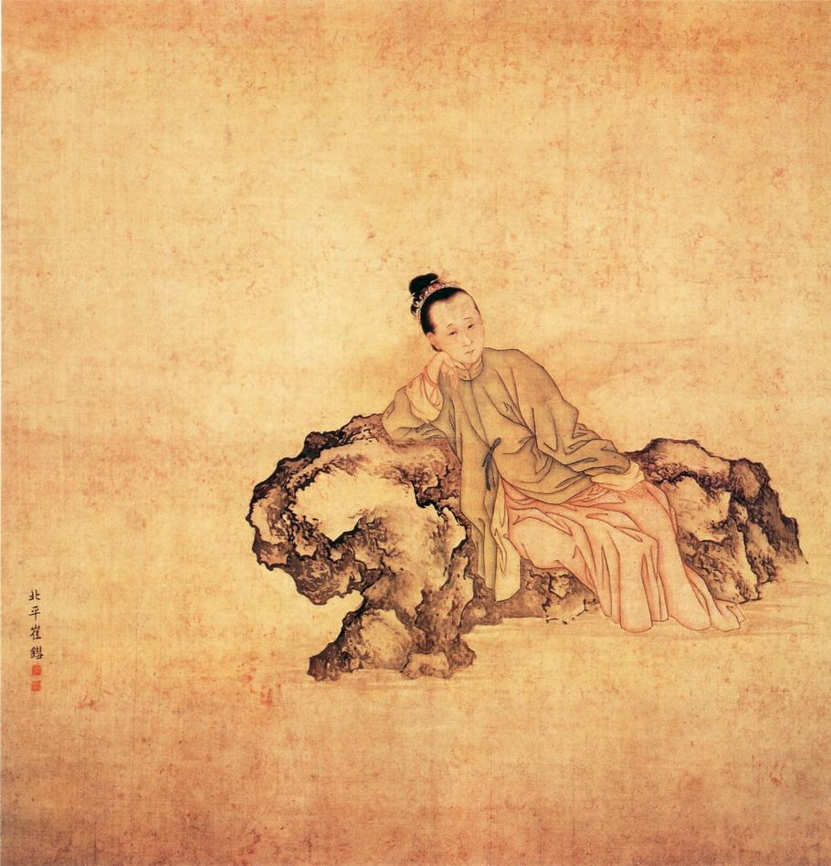

墨痕犹在
她是婉约词宗的绝代才女，也是金石学史上唯一的女学者。李清照（1084–1155），号易安居士，以惊世才情照亮了两宋之交的黯淡天空。
前半生，她是太学生之妻，与赵明诚携手搜罗天下金石古器，共著《金石录》——一部开创性的金石学巨著。后半生，靖康之变骤起，南渡流离，在金陵（今南京）经历了人生最惨痛的转折：国破、家亡、夫逝、书散。
她在金陵写下的《金石录后序》，以血泪之笔追忆三四十年的聚散离合，将个人命运与家国兴衰熔铸一炉，成为中国散文史上不朽的名篇。
三十四年之间，忧患得失，何其多也！然有有必有无，有聚必有散，乃理之常。
——《金石录后序》
清 · 改琦《李清照小像》
图像来源 · 博物馆数字资源
从汴京风华到金陵寒雨 —— 易安人生轨迹
生于济南章丘（今山东济南）书香门第，父李格非为苏轼弟子。幼年聪慧，诗词惊动汴京文坛。
18岁与太学生赵明诚结为伉俪。志趣相投，节衣缩食搜购金石碑帖，共同整理校勘，为《金石录》的编纂奠定基础。青州归来堂是其最幸福的岁月。
金兵南下，汴京陷落。李清照携金石收藏辗转南逃。建炎三年（1129），赵明诚在赴湖州任途中病逝于建康（金陵）。清照悲痛欲绝，作词祭夫。
寓居金陵（建康）期间，完成了《金石录后序》的撰写——追忆与赵明诚三十余载的收藏生涯，字字血泪。其后辗转越州、台州、衢州等地，金石藏书在战火中散失殆尽。
晚年定居临安（今杭州），整理赵明诚遗稿，完成《金石录》的刊行。孤苦伶仃中仍笔耕不辍，词风愈发深沉。约1155年悄然辞世，葬于何处已不可考。
易安词选 · 从少女天真到暮年苍凉
常记溪亭日暮，
沉醉不知归路。
兴尽晚回舟，
误入藕花深处。
争渡，争渡，
惊起一滩鸥鹭。
红藕香残玉簟秋。
轻解罗裳，独上兰舟。
云中谁寄锦书来？
雁字回时，月满西楼。
花自飘零水自流。
一种相思，两处闲愁。
此情无计可消除，
才下眉头，却上心头。
薄雾浓云愁永昼，
瑞脑销金兽。
佳节又重阳，
玉枕纱厨，半夜凉初透。
东篱把酒黄昏后，
有暗香盈袖。
莫道不销魂，
帘卷西风，人比黄花瘦。
寻寻觅觅，冷冷清清，
凄凄惨惨戚戚。
乍暖还寒时候，最难将息。
三杯两盏淡酒，
怎敌他、晚来风急？
雁过也，正伤心，却是旧时相识。
满地黄花堆积。憔悴损，
如今有谁堪摘？
守着窗儿，独自怎生得黑？
梧桐更兼细雨，
到黄昏、点点滴滴。
这次第，怎一个愁字了得！
风住尘香花已尽，
日晚倦梳头。
物是人非事事休，
欲语泪先流。
闻说双溪春尚好，
也拟泛轻舟。
只恐双溪舴艋舟，
载不动许多愁。
落日熔金，暮云合璧，
人在何处。
染柳烟浓，吹梅笛怨，
春意知几许。
元宵佳节，融和天气，
次第岂无风雨。
来相召、香车宝马，
谢他酒朋诗侣。
一部金石学巨著背后的血泪悲欢
《金石录》三十卷，赵明诚撰，李清照续成。著录上古三代至隋唐五代的金石器物、碑刻铭文共约2000种，是中国金石学史上继欧阳修《集古录》之后的又一座里程碑。
然而，这部学术巨著背后，是一位女性在战乱中以血肉之躯守护的承诺。
赵明诚与李清照新婚之际，二人即志趣相投。宁可「食去重肉，衣去重彩」，也要省下钱来购买金石碑帖、古玩字画。每得一书，即共同校勘、题签、整理。
在青州归来堂，他们把收藏整理得井然有序。每晚饭后，夫妇二人煮茶猜书：指着堆积的书卷，赌某事在某书某卷第几页第几行。胜者先饮茶，却常常大笑至茶洒怀中不得饮——「赌书消得泼茶香」，成为千古文坛佳话。
靖康二年（1127），金兵攻陷汴京。李清照南下时，将收藏「先去书之重大印本者，又去画之多幅者，又去古器之无款识者」——每一次选择都是一次撕心裂肺的取舍。辗转千里，十余屋藏书最终散失殆尽。
建炎三年（1129），赵明诚病逝于建康。李清照在悲痛中追忆往事，于绍兴二年（1132）写成《金石录后序》。这篇序文以三千余字记述了三十四年间收藏之乐与丧乱之苦，将个人命运与家国兴衰交织，被誉为「中国散文史上的第一等文字」。
李清照暮年避居临安，在极为困苦的条件下，将赵明诚未完的《金石录》整理完毕并刊刻行世。这部巨著的问世，凝聚了她后半生全部的心血——「岂人性之所著，生死不能忘欤？」
「右《金石录》三十卷者何？赵侯德父所著书也。取上自三代，下迄五季，钟、鼎、甗、鬲、盘、匜、尊、敦之款识，丰碑大碣、显人晦士之事迹，凡见于金石刻者二千卷……
……呜呼！自王播、元载之祸，书画与胡椒无异；长舆、元凯之病，钱癖与传癖何殊？名虽不同，其惑一也。
……然有有必有无，有聚必有散，乃理之常。人亡弓，人得之，又胡足道？所以区区记其终始者，亦欲为后世好古博雅者之戒云。」
—— 李清照 · 绍兴二年（1132）
李清照与建康城的不解之缘
金陵（今南京），古称建康、秣陵、石头城。宋代为江南东路治所，是长江下游最重要的城市之一。对李清照而言，金陵是她生命中最沉痛转折的发生地——
建炎三年（1129）五月，赵明诚罢守江宁，赴湖州任。八月十八日，在建康病逝。李清照「悲泣不已」。
寓居金陵后，李清照提笔写下《金石录后序》，追忆「三十四年之间，忧患得失」。
《声声慢》《临江仙》《蝶恋花·上巳》《念奴娇》等名篇均作于流寓金陵前后，金陵的风雨与愁绪深深地浸入词句之中。
在金陵期间，李清照的藏书历经盗劫、兵火、散失。她以一己之力守护着与亡夫的约定。
庭院深深深几许，
云窗雾阁春迟。
柳丝袅娜拂行舟，
归来未，著意过今春。
感月吟风多少事，
如今老去无成。
谁怜憔悴更凋零，
试灯无意思，踏雪没心情。
此词作于建康（金陵），是李清照南渡后词风转折的代表作。从「感月吟风」到「老去无成」，家国破碎之痛尽在其中。
1127 — 1129年，从汴京到金陵的逃亡之路
李清照在南京的居住地、游踪与诗词中的金陵地名
虽无确切地址留存，但多部宋元方志与考古资料锁定了李清照在建康的宅第所在。
《景定建康志》载「李清照故居」在青溪南岸，靠近淮清桥（今南京市秦淮区淮清桥一带）。青溪是秦淮河的一条支流，宋时风景清幽。现代学者朱偰《金陵古迹图考》（1935）将其标定在「淮清桥东北，今白鹭洲公园一带」。
赵明诚于建炎三年（1129）被任命为知江宁府，其官署位于石头城（今清凉山一带）西南。李清照初至建康时曾居此处，石头城上可眺长江，城下便是秦淮入江口。
《秦淮古今谈》记载：「李清照在秦淮河畔的宅院，门对桃叶渡，墙依乌衣巷。」桃叶渡为秦淮河著名古渡，因王献之爱妾桃叶渡江而得名；乌衣巷则是六朝贵族聚居之地。唐人刘禹锡「旧时王谢堂前燕，飞入寻常百姓家」即咏此处。
史料出处：《景定建康志》· 周应合（1247）| 《金陵古迹图考》· 朱偰（1935）| 《秦淮古今谈》| 《金石录后序》· 李清照自述
李清照在建康期间曾到访的景点与名胜
居住于此，每日面对秦淮烟水。《临江仙》序明言「住在秦淮」。秦淮河的柳丝、灯火、秋雨反复出现在她的词中。
赵明诚官署所在。李清照常登城远眺长江，《南渡录》记载她「日登石城望北」——每日登上石头城北望故土汴梁。
位于秦淮河畔的水榭亭台，是宋代建康著名的观景登临之地。李清照曾在此凭栏悼念亡夫。
金陵名胜，李白「凤凰台上凤凰游」即咏此。李清照登台眺望长江、感念故国。
石头城所在的山丘，宋代此处有清凉寺。李清照与赵明诚曾在此避暑。山巅可俯瞰建康全城。
宋代称「后湖」或「练湖」。学者推断李清照《蝶恋花·上巳》中的「湖畔」即指玄武湖。湖上风光曾提振她南渡初年的心境。
即紫金山。宋代建康的形胜之地。李清照在词中曾以「钟山烟雨」寄寓对故土的思念。
李清照的金陵词作中，处处可见这座城市的地理印记
李清照研究综述 · 权威著作与南京相关论文
据统计，自20世纪以来，海内外关于李清照的学术论文已超过4,200篇（截至2024年），其中与南京/金陵/建康直接相关的约40–50篇。她的南渡经历与金陵时期已成为李清照研究中一个独立而重要的分支。
人民文学出版社
标准文本校注本 · 李清照研究的基石
南京大学出版社
最具影响力的学术传记 · 由南大出版社出版
上海古籍出版社
翔实笺注本 · 与王仲闻本互参
中华书局
中华经典传记系列 · 兼论建康词
人民文学出版社
编年研究 · 考订南渡后行迹
上海远东出版社
精选注本 · 以南京时期为重点
崇文书局
集大成整理本
中华书局
名家解读系列
齐鲁书社
早期年谱力作
中华书局
资料集成 · 研究必备参考
于信义 · 《南京社会科学》1995年第8期
最早专题探讨李清照建康时期创作心态的论文，被引逾80次
邓红梅 · 《中国韵文学刊》2000年第2期
专门分析李清照在建康所作词作的艺术特色，被引逾120次
肖利 · 《江苏地方志》2003年第3期
王昊 · 《古典文学知识》2007年第4期
张蕾 · 《南京理工大学学报（社科版）》2010年第2期
李劼 · 《江苏社会科学》2012年第5期
王晓骊 · 《苏州大学学报（哲学社科版）》2014年第3期
陈虹 · 《南京晓庄学院学报》2015年第4期
刘云 · 《中国文学研究》2019年第1期
刘芳 · 《古籍研究》2021年第1期
以上论文中，与南京直接相关的约占李清照研究总数的1–1.2%。其中被引最高者为邓红梅（2000）和于信义（1995）。
李清照（1084–1155）的历史坐标中，同时代的西方世界亦有杰出的女性书写者
11–12世纪的欧洲与拜占庭帝国，正处于中世纪的繁盛期。几位卓越的女性——她们是历史学家、神学家、哲学家与诗人——与李清照生活在同一片星空之下。她们虽然相隔万里、文化迥异，却共同以文字见证了那个风云激荡的时代。
词人、金石学家。《漱玉词》《金石录》。以婉约词风与家国情怀著称，被誉为中国古代最伟大的女文学家。
拜占庭公主、欧洲史上第一位女性历史学家。其父为皇帝阿历克塞一世。她用希腊文撰写的《亚历克塞传》（Alexiad）十五卷，详细记述了十字军东征时期的拜占庭帝国，是研究中世纪东地中海世界最重要的第一手史料之一。她的生年（1083）与李清照（1084）几乎完全重合。
本笃会女修道院院长、神学家、哲学家、作曲家、博物学家。她的三大神学著作《认识主道》（Scivias）、《生命功绩》（Liber Vitae Meritorum）与《神之功》（De Operatione Dei）在基督教神秘主义传统中地位崇高。她还著有博物学著作《自然界》（Physica）与《病因与疗法》（Causae et Curae），创作了大量礼仪音乐。她是西方音乐史上第一位留下姓名的女作曲家。
法国女修道院院长、学者。以其与经院哲学家阿伯拉尔（Pierre Abélard）的著名通信而载入史册。这批书信探讨了爱情、哲学、宗教与女性教育等深刻主题，以其理性的思辨与炽热的情感并存而著称。埃罗伊兹通晓拉丁语、希腊语和希伯来语，是12世纪欧洲最博学的女性之一。
中世纪第一位知名的法语女诗人。她以古法语创作了十二首《叙事诗》（Lais），取材于不列颠与布列塔尼的骑士传奇，以女性的视角重塑了爱情、忠诚与冒险的主题。她还翻译了《伊索寓言》式的《寓言集》（Ysopet）。她的生卒年略晚于李清照，但作品时代与李清照暮年有所重叠。
Wallada bint al-Mustakfi · 1001–1091
科尔多瓦（今西班牙）后倭马亚王朝公主，安达卢西亚最著名的女诗人。她大胆地主持文学沙龙，以不戴面纱、衣袍绣诗的叛逆姿态挑战礼教。卒于李清照出生前数年，精神气质却极为相似。
12–13世纪 · 法国南部
奥克西塔尼亚（今法国南部）的女性游吟诗人。以贝亚特丽斯·迪亚（Beatriz de Dia，c.1140–c.1200）为代表，她们用奥克语创作骑士爱情诗歌，是欧洲文学史上第一批女性抒情诗人群体。
c.1135–1191
安达卢西亚（格拉纳达）女诗人。活跃于穆瓦希德王朝宫廷，以精湛的阿拉伯语诗歌闻名，常与李清照一样以诗词抒发女性命运。
李清照（1084–1155）与安娜·科穆宁娜（1083–1153）几乎是精确的同代人，二者生卒年高度重合。希尔德加德·冯·宾根（1098–1179）比李清照小14岁，但活跃期同样在12世纪前半叶。她们共同见证了：十字军东征（1096–1291）、宋代中国与拜占庭帝国南北呼应地处于文明鼎盛向危机的转折。
她们之中，有人书写历史——《亚历克塞传》与《金石录》同为存亡之际的记载；有人书写信仰——希尔德加德的神秘异象与埃罗伊兹的哲思书信；有人书写爱情——玛丽与特罗巴里茨的骑士诗歌与李清照的婉约词章。虽相隔万里，文字的力量却是共通的。
「李清照 · 金陵《金石录》」是一个开放的数字人文项目，致力于呈现宋代女词人李清照的生平、词作及其与金陵、《金石录》的深厚渊源。
项目聚焦于靖康南渡这一历史转折背景下，一位女性学者如何在战乱中守护学术理想、在苦难中写下不朽篇章。
所有资料遵循开源协议，欢迎贡献
基于可靠史料与学术研究成果整理
内容与图像资料将持续更新完善
如果你有更多资料、高清图像或改进建议，欢迎通过 GitHub 提交贡献。
GitHub 仓库 →参考资料：